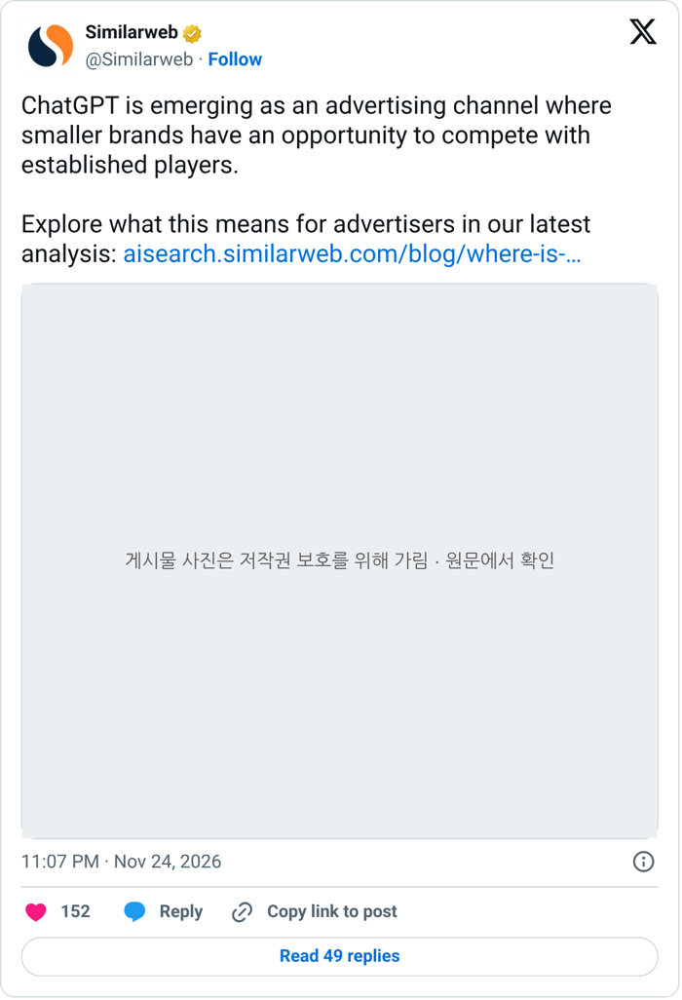

광고가 나오는 조건은 요금제 말고 또 있나?
요금제 말고도 나이와 로그인 상태, 대화 주제에 따라 광고 노출이 달라집니다. 오픈AI 도움말은 18세 미만으로 식별된 계정에는 광고를 보여 주지 않고, 로그아웃 상태의 광고는 모든 연령에 적합한 것만, 성인 콘텐츠 광고는 조건을 충족한 로그인 이용자에게만 보인다고 적었습니다.
Business·Enterprise·Edu 계정에도 광고가 없다고 같은 도움말에 적혀 있습니다.
출시 공지에 따르면 건강·정신건강·정치 같은 민감한 주제 근처에는 광고가 나오지 않습니다.
광고는 답변 아래에 따로 표시되고, 도움말은 이미지를 만드는 동안 이미지 여러 장짜리 광고도 시험 중이라고 밝혔습니다.
이 소식은 어디서 시작됐나?

그렉 브록먼(Greg Brockman)의 2026년 11월 25일 09:49(KST) 게시물이 계기입니다. 오픈AI 사장 겸 공동 창립자인 그는 엑스(X)에 “ChatGPT Ads are opening up the playing field for smaller brands to compete”라고 올렸고, 작은 브랜드에도 경쟁할 마당을 열어 준다는 뜻입니다.
시밀러웹(Similarweb)의 게시물을 인용한 것이라 숫자는 시밀러웹 쪽 자료입니다.
갈무리의 사진은 저작권 때문에 가렸고, 원문 링크에서 볼 수 있습니다.
게시물 자체는 요금제나 한국 사정을 말하지 않습니다. 이 글은 읽는 사람의 질문, 곧 “내 요금제에서 광고를 피하려면 얼마가 드는가”에 공식 자료로 답합니다.
요금제별 월 비용과 사용 한도는 어떻게 다른가?
표는 요금제마다 한국 앱스토어 표시가와 광고 여부를 한 줄씩 비교합니다. 한국 가격은 편집부가 2026년 11월 27일 한국 앱스토어의 챗GPT 앱 정보 ‘앱 내 구입’ 목록에서 직접 읽었습니다.
목록에는 결제 주기가 적혀 있지 않지만, Go 도움말이 Go·Plus·Pro 모두 월 자동 결제이고 연간 결제는 없다고 밝혀 월 가격으로 읽었습니다.
| 요금제 | 한국 월 표시가 | 광고 |
|---|---|---|
| 무료 | 0원 | 있을 수 있음 |
| Go | 13,000원 | 있을 수 있음 |
| Plus | 29,000원 | 없음 |
| Pro 100 | 159,000원 | 없음 |
| Pro 200 | 299,000원 | 없음 |
| Pro 500 | 790,000원 | 없음 |
미국 정가는 무료 0달러, Go 8달러, Plus 20달러, Pro 100·200·500달러입니다.
앞의 Go·Plus 가격은 오픈AI Go 출시 공지(2026년 1월 16일), Pro 가격은 Pro 도움말이 근거입니다.
Go 요금제 카드에는 “이 플랜에는 광고가 포함될 수 있습니다”라는 문구가 있습니다.
사용 한도는 한국어 요금제 페이지(2026년 11월 27일 KST 확인)에서 숫자로 확인되는 것만 옮겼습니다.
문맥 창은 모델이 한 번에 다루는 글 양이고, ‘일반 모델’은 페이지의 GPT Instant, ‘추론 모델’은 생각하는 시간을 더 쓰는 모델입니다.
- 무료: 텍스트 대화 무제한(남용 방지 제한). 업로드·이미지·음성·심층 리서치·메모리는 ‘제한적’. 일반 모델 문맥 창 27K, 입력 약 12페이지.
- Go: 도구 포함 메시지·업로드·이미지 한도가 무료보다 높음. 일반 모델 54K, 입력 약 40페이지. 추론 모델 256K, 입력 약 320페이지.
- Plus: 메시지·업로드·심층 리서치 한도 ‘확장’. 일반 모델 54K·약 40페이지, 추론 모델 256K·약 320페이지.
- Pro(세 등급): 일반 모델 128K·약 250페이지, 추론 모델 400K·약 680페이지.
메시지·이미지 횟수는 현재 요금제 페이지와 도움말에 요금제별 숫자로 나오지 않습니다.
2026년 1월 Go 출시 공지는 Go가 무료보다 메시지·업로드·이미지 생성이 10배라고 적었지만, 출시 당시 문구이고 현재 Go 도움말에는 없습니다.
Pro 세 등급은 광고 유무가 같고 사용량이 다르며, 세부 기능 이름(Codex, Work, Ultrafast 등)은 광고 비용 비교와 무관해 풀이하지 않았습니다.
뜻은 요금제 페이지에서 볼 수 있습니다.
광고를 끄거나 피하는 데 얼마가 드나?
무료 ‘광고 없음’의 줄어든 한도 없이 광고를 없애는 개인 요금제 중 가장 싼 것은 Plus입니다. 도움말은 Go에서는 ‘광고 없음’ 옵션을 쓸 수 없고, 무료로 전환하거나 Plus·Pro로 올려야 한다고 명시합니다.
무료 이용자는 설정의 광고 제어에서 ‘광고 없음’을 고를 수 있습니다.
아래 금액은 한국 앱스토어 표시가(2026년 11월 27일 KST)를 기준으로 편집부가 계산했습니다. ‘+’는 지금보다 더 내는 돈, ‘-’는 줄어드는 돈입니다.
| 광고 없애는 길 | 월 변화(원) | 1년 환산(원) |
|---|---|---|
| 무료 ‘광고 없음’ | +0 | 0 |
| 무료→Plus | +29,000 | +348,000 |
| Go→무료 | -13,000 | -156,000 |
| Go→Plus | +16,000 | +192,000 |
포기하는 것은 길마다 다릅니다. 무료 ‘광고 없음’은 하루 메시지 수와 이미지 생성·심층 리서치 같은 일부 도구를, Go에서 무료로 내려가면 Go의 높은 한도까지 포기합니다. Plus로 올리는 쪽은 요금제 페이지가 Go의 모든 기능을 포함한다고 적어 포기하는 기능이 없습니다.
달러 정가를 환율로 바꾼 값과 앱스토어 표시가는 다릅니다.
유럽중앙은행 참조 환율을 옮겨 주는 프랑크푸르터(Frankfurter) 기준 2026년 11월 26일 1달러는 1,344.65원입니다.
Go 8달러는 약 10,757원, Plus 20달러는 약 26,893원이라, 앱스토어 표시가가 각각 약 2,240원, 약 2,110원 높습니다.
그 이유(세금이나 앱스토어 가격 정책)는 확인하지 못했습니다.
광고는 실제로 얼마나 퍼져 있나?

시밀러웹은 2026년 10월 26일~11월 8일 무료·Go 이용자 3명 중 1명이 광고를 봤다고 추정합니다. 원문 표현은 광고 대상 이용자(eligible users) 중 2주 동안 광고를 한 번 이상 본 비율입니다.
시밀러웹이 2026년 11월 15일 올린 분석 글은 이 2주 동안 영국 약 48%, 프랑스 45%, 미국과 인도 41% 수준이라고 적었고, 한국 수치는 따로 없습니다.
같은 글에서 광고 노출의 상위 10개 광고주 몫은 14.7%였습니다.
나머지 약 85%는 그 밖의 광고주가 나눠 가졌다는 뜻이며, 그 광고주가 모두 작은 곳이라는 뜻은 아닙니다.
시밀러웹은 상위 목록이 소매업보다 기업용 서비스·소프트웨어 쪽이라고 설명했습니다.
이 숫자는 광고를 파는 회사가 아니라 외부 분석 업체의 추정입니다.
오픈AI는 2026년 10월 21일 광고 지원 국가를 89곳으로 넓혔다고 밝혔습니다.
한국에서는 언제부터 광고가 나왔나?
한국은 2026년 6월 19일 시험 노출을 시작해 8월 11일 정식 출시 지역이 됐습니다. 연합뉴스 보도에 따르면 오픈AI는 6월 19일 광고 시험을 한국으로 넓혔고 무료·Go의 성인 이용자만 대상으로 했습니다.
오픈AI의 출시 공지는 2026년 8월 11일 영국·멕시코·브라질·일본·한국에서 광고를 시작했다고 갱신해 적었습니다.
모든 사용자에게 한꺼번에 보이는 것은 아닙니다. 도움말은 광고를 ‘일부 지역의 이용 대상자에게 단계적으로’ 보여 준다고 밝혔고, 광고 제어 메뉴가 보이지 않으면 시험 대상이 아닐 수 있습니다. 한국에서 광고를 얼마나 자주 보는지는 공식 수치가 없습니다.
광고를 줄이려면 설정에서 무엇을 바꾸나?
광고 개인화를 꺼도 광고는 남고, 지금 대화에 맞춘 광고만 보이게 됩니다. 오픈AI 도움말은 설정의 ‘광고 제어’에서 개인화 끄기, 광고 숨기기와 의견 보내기, 광고가 뜬 이유 보기, 광고 데이터 삭제를 할 수 있다고 안내합니다.
개인화를 끄면 다른 대화·광고 기록·주제는 쓰지 않지만 지금 대화의 맥락은 그대로 쓰입니다.
무료의 ‘광고 없음’ 경로는 ‘설정 → 광고 제어 → 광고 없이 사용하기 위한 플랜 변경 → 메시지 한도 줄이기’입니다. 사용 한도에 닿으면 업그레이드나 ‘광고 표시’로 되돌리는 안내가 뜰 수 있습니다.
광고주는 얼마를 내야 하나?
2026년 11월 27일(KST) 기준 원화 청구 계정의 최소 일일 예산은 25,000원입니다. 캠페인 도움말의 ‘최소 캠페인 지출’ 표에 원화 25,000원이 적혀 있습니다.
일일 예산 도움말에 따르면 일일 예산은 7일 평균이라, 하루 최대 지출은 예산의 2배(50,000원), 7일 최대는 예산의 7배(175,000원)입니다.
30일 내내 최소 예산으로 돌린다면 편집부 계산으로 약 750,000원이 상한 수준입니다.
광고 관리자(Ads Manager)의 국가별 이용 현황에는 한국이 ‘이용 가능’으로 올라 있습니다.
오픈AI는 2026년 11월 12일 44개국 광고주가 알레프(Aleph)라는 독점 재판매사를 통해 현지 통화로 계약·결제할 수 있게 했다고 밝혔는데, 이 44개국 명단에 한국은 없습니다.
확인 현재까지 확인된 내용
2026년 11월 27일 09시대 KST에 오픈AI 도움말·공지와 챗GPT 요금제 페이지를 직접 읽었습니다.
Go 도움말과 일일 예산 도움말은 같은 날 수정 표시가 떠 있어 다시 열어 수치를 대조했습니다.
한국 앱스토어 ‘앱 내 구입’ 목록과 엑스 게시물 2건(브록먼 11월 25일 09:49 KST, 시밀러웹 11월 24일 23:07 KST)은 원문과 시각을 대조했습니다.
미확인 아직 확인하지 못한 것
- 요금제 페이지(chatgpt.com)의 금액은 스크립트로 표시되고, 편집부가 연 브라우저에서는 보안 확인 화면이 떠 읽지 못했습니다. 한국 웹 결제 화면의 원화 합계도 보지 못했습니다.
- 앱스토어 목록에는 ‘ChatGPT Plus 299,000원’ 항목이 하나 더 있으나 결제 주기가 적혀 있지 않아 비교에서 뺐습니다.
- 한국 Go 가격은 2026년 6월 한겨레 보도에서 월 15,000원이었는데, 지금 앱스토어는 13,000원입니다. 바뀐 시점은 모릅니다.
- Go 도움말은 추론 기능 ‘Think’가 GPT-5.6 Luna를 쓴다고 하지만, 요금제 페이지 모델 표는 GPT-5.6 Luna를 Go ‘아니요’, GPT-6 Luna를 Go ‘예’로 적어 서로 어긋납니다. Go의 음성 대화 한도도 도움말(무료와 같음)과 요금제 페이지(‘더 많이’)가 다릅니다.
- 한국 광고 노출 빈도의 공식 수치는 없습니다. 요금제를 내릴 때 남은 기간 환불은 Go 도움말에서 Pro·Plus에서 Go로 내릴 때 없다는 것만 확인했고, Go에서 무료로 내릴 때는 확인하지 못했습니다.
누가 알렸나?
| 누구 | 소개 | 맡은 대목 |
|---|---|---|
| 브록먼 | 오픈AI 사장 | 계기 게시물 |
| 시밀러웹 | 분석 업체 | 노출 수치 |
| 오픈AI | 공식 문서 | 광고·예산 |
자주 묻는 질문
Go 요금제를 쓰는데 광고를 없앨 수 있나요?
Go에서는 ‘광고 없음’을 고를 수 없습니다. 오픈AI 도움말은 무료로 전환하거나 Plus·Pro로 올리라고 안내합니다.
광고가 보이면 답변도 광고주 쪽으로 기울까요?
오픈AI는 광고와 답변이 서로 다른 시스템에서 돌아가고, 광고주가 답변을 바꾸거나 순위를 매길 수 없다고 밝혔습니다. 다만 광고는 ‘돈을 내고 노출되는 내용’이며 오픈AI가 그 제품을 추천한다는 뜻은 아니라고도 적었습니다.
Plus와 Pro는 광고 말고 뭐가 다른가요?
Pro는 세 등급이고 광고 유무는 Plus와 같습니다. 사용량과 모델이 다릅니다. Plus의 메시지 한도는 공식 자료에 숫자가 없어, 광고만 피하려는 이용자에게 Plus가 충분한지는 이 글이 판단하지 않습니다.
우리 가게도 챗GPT에 광고를 낼 수 있나요?
광고하고 청구받는 법인이 한국처럼 이용 가능 국가에 있으면 광고 관리자로 직접 시작할 수 있습니다. 개인 사업자도 되는지는 공식 자료에서 확인하지 못했습니다. 광고는 심사 후 게재되고, 일부 신규 계정은 처음에 등록 국가에서만 광고를 낼 수 있다고 도움말에 적혀 있습니다.
참고 자료
- 오픈AI 도움말: ChatGPT의 광고
- 오픈AI 공지: Testing ads in ChatGPT(2026-08-11 갱신)
- 오픈AI 공지: ChatGPT Ads, 신규 26개국 확대(2026-10-21)
- 오픈AI 공지: 알레프 재판매 44개국(2026-11-12)
- 오픈AI 도움말: 광고 관리자 이용 현황
- 오픈AI 도움말: ChatGPT 광고 캠페인 만들기
- 오픈AI 도움말: 일일 예산
- 챗GPT 한국어 요금제 페이지
- 오픈AI 도움말: What is ChatGPT Go?
- 오픈AI 공지: ChatGPT Go 전 세계 출시(2026-01-16)
- 오픈AI 도움말: ChatGPT Pro 등급
- 한국 앱스토어 챗GPT 앱 정보(앱 내 구입 목록)
- 시밀러웹 분석: Where Is My Customer?(2026-11-15)
- 그렉 브록먼 엑스 게시물(2026-11-25 09:49 KST)
- 시밀러웹 엑스 게시물(2026-11-24 23:07 KST)
- 연합뉴스: 챗GPT 광고 한국 서비스 시작(2026-06-19)
- 한겨레: 챗GPT 광고 한국 도입(2026-06-19)
- Frankfurter 환율 API(2026-11-26 기준 1달러=1,344.65원)
관련 글
글: 에이전트빅보드 편집부. 이 글은 AI 도구로 자료를 모으고 초안을 쓴 뒤, 편집부가 공식 자료와 하나씩 대조해 검수했습니다. 숫자와 일정은 2026년 11월 27일 KST 기준입니다. 에이전트빅보드 소개와 편집 방식
지금 쓰는 요금제에서 광고가 보인 적이 있다면, 그 광고가 대화 주제와 얼마나 맞았나요?
AI 도구로 자료 수집과 초안 작성을 돕고, 편집부가 공식 자료와 대조해 검수했습니다.